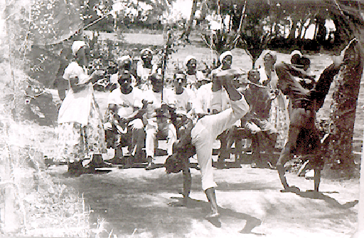
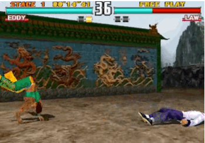

The Mundo of Capoeira

History of Capoeira
Capoeira was created by African slaves in Brazil. The slaves were brought to Brazil during the Atlantic Slave Trade. Most of the slaves are from Angola in Africa.
The picture below shows Africans doing capoeira.
Basic Capoeira Moves
The Ginga, Aú and Balança are a few of the basic moves used in Capoeira.
Ginga is the main movement used in capoeira. The capoeirista (person who practices capoeira) sways their body from side to side and raises their arms to their face to protect themselves from their opponent.
Aú is basically a cartwheel and protects the capoeirista from incoming attacks from their opponent
Balança involves the capoeirista swaying side to side with their knees bent while they protect their face with their arms. This movement deceives the opponent so they can't know what the capoeirista will do next.
Belt System
Capoeira ranks the skill level of capoeira students by using a belt system. The belt is a called a cordão and incorporates the colors of the Brazilian flag: blue, yellow, white and green. A student gets their belt at the Batizado (baptism) ceremony where they demonstrate their skill level in a capoeira match.
The graphic below shows the belt system ranking with the title of the capoeirista level on the left side, the color of the belt in the middle and the name of the color of the belt on the right side of the table.

Capoeira Instruments
Capoeira is a unique martial art because music is an integral part of a capoeira match. Below are a couple of instruments that are used during the Roda. A Roda is a circle formed by the capoeira students around the two opponents where they sing and clap to the sounds of the capoeira instruments.
Berimbau is an African instrument and defines whether the capoeira game will be angola or regional. Capoeira Angola is a slower, less aggressive style of the martial art. Capoeira Regional is a faster, more aggressive style of the martial art.

Atabaque is a drum that is played to create the beats and steps used in a capoeira match. The rhythm of the drum has 4 beats.

Capoeira in Popular Culture
Capoeira has become popular in many countries. It has been used in popular culture as well. There is a fighting video game series called Tekken that has a character named Eddy Gordo who is a capoeirista.
Eddy Gordo is an Afro-Brazilian who uses his capoeira skills to fight his opponents in Tekken. Below is a clip from the video game showing Eddy doing his capoeira moves.
